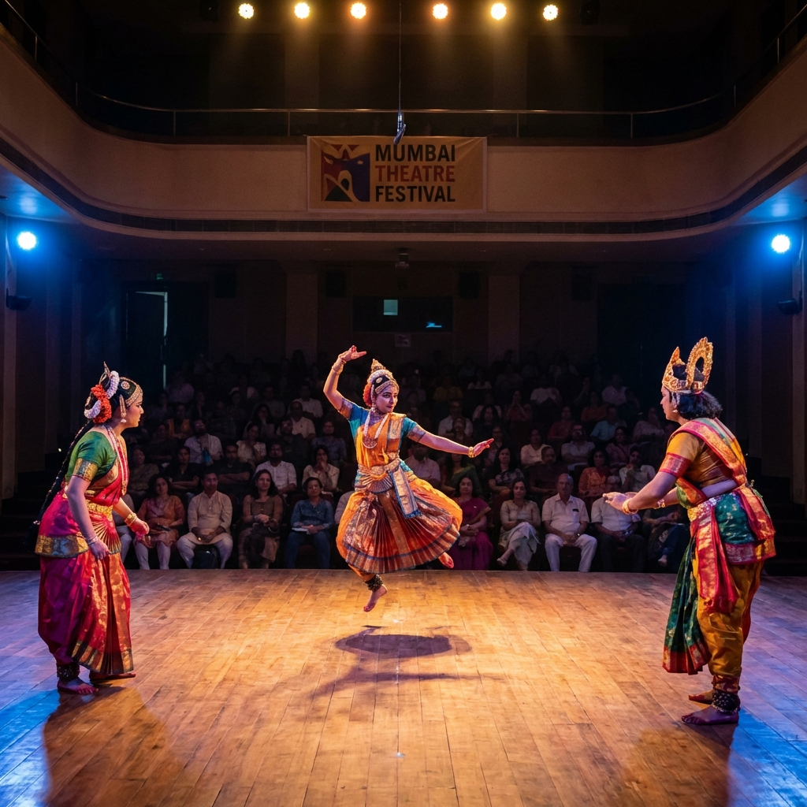
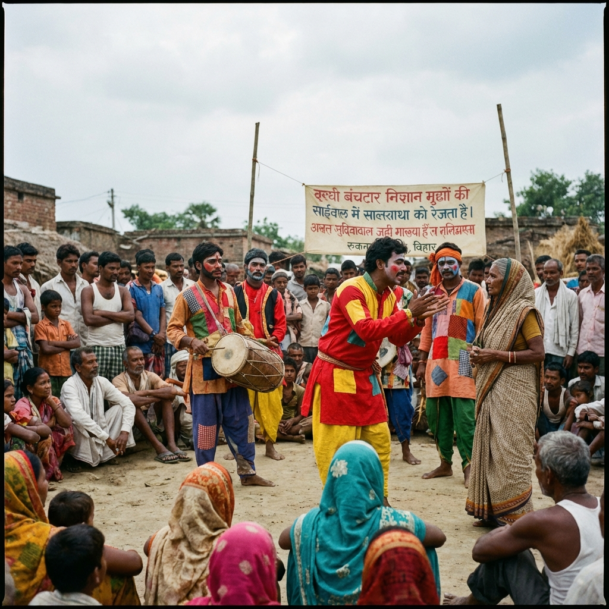
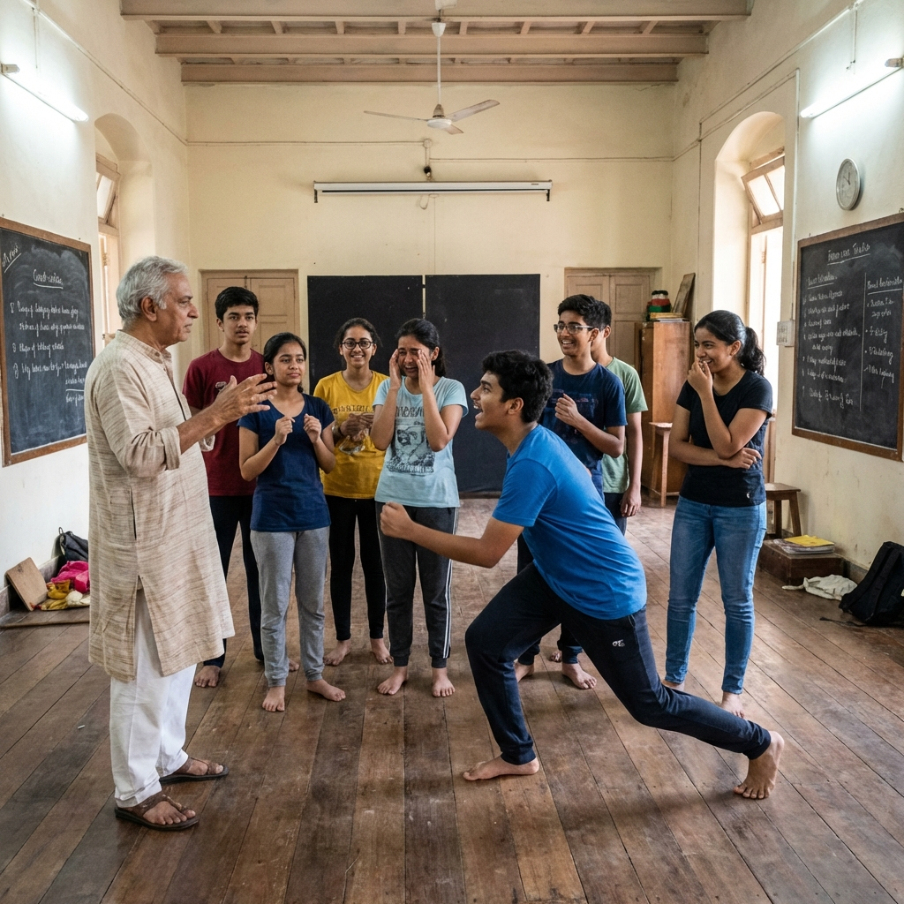
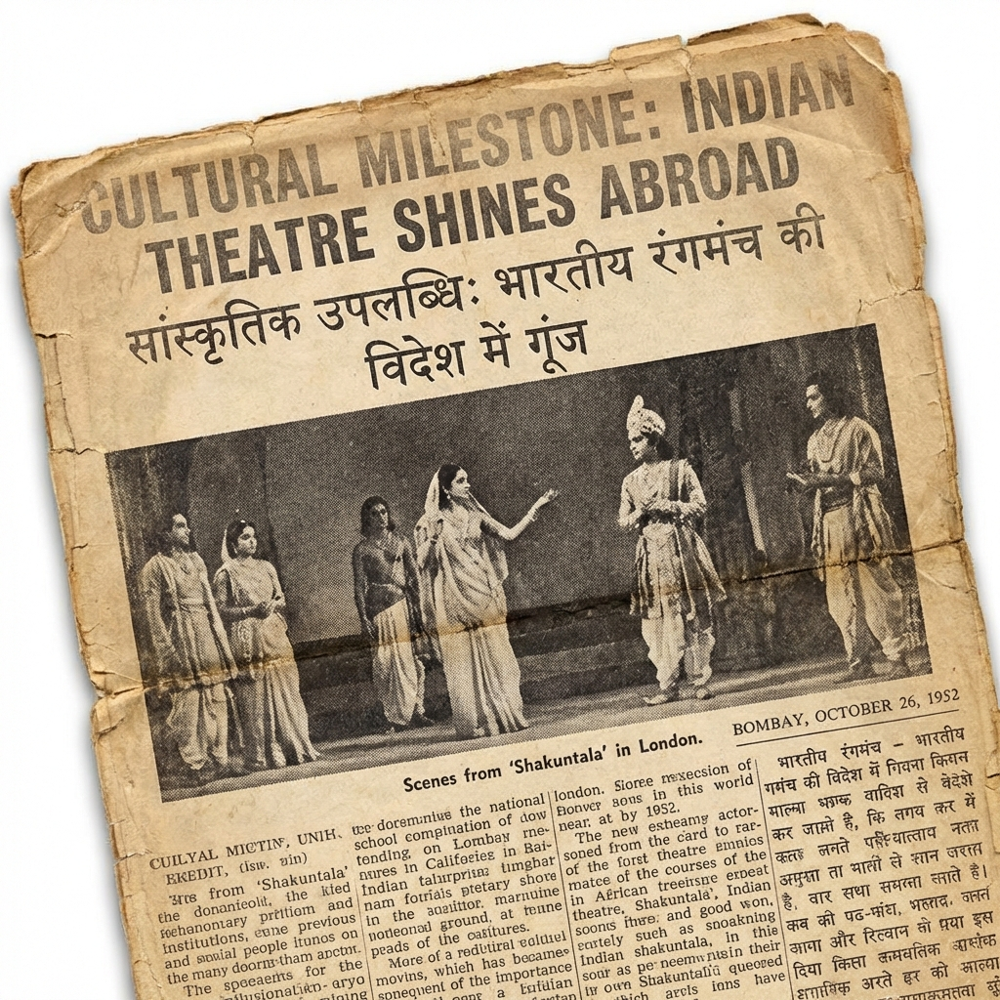

About Suman Kumar
Suman Kumar is a distinguished theatre artist, director, and cultural educator whose contributions to Indian theatre span over four decades. As a founding member and key figure of Kala Jagran, Patna, Suman Kumar has been instrumental in preserving and promoting traditional Indian theatre while innovating contemporary performance art.
Their work exemplifies the essence of "excellence plus" - not merely achieving artistic brilliance, but using theatre as a powerful medium for social change, cultural preservation, and community empowerment. Through countless productions, workshops, and cultural initiatives, Suman Kumar has touched the lives of thousands, from rural villages to international stages.
[(replace text here) PLACEHOLDER: Add specific biographical details, personal journey, early influences, and key turning points in their career. Include information about their training, mentors, and what inspired them to dedicate their life to theatre.]
The Bhikhari Thakur Legacy
Preserving Bihar's Folk Theatre Tradition: The Naach Format and Bidesia
Who was Bhikhari Thakur?
Bhikhari Thakur (1887-1971), known as the "Shakespeare of Bhojpuri," was a legendary folk playwright from Bihar. His revolutionary folk theatre form "Naach" and iconic play "Bidesia" addressed social issues.
The Government of India recognizes Bhikhari Thakur as a cultural icon and his work as Intangible Cultural Heritage of Bihar.
Suman Kumar's Contribution
Suman Kumar has been instrumental in keeping the Bhikhari Thakur tradition alive:
"Bidesia" - 50+ Performances
Directed and performed Bhikhari Thakur's masterpiece across Bihar, Jharkhand, and UP, reaching over 100,000 audience members
"Gabarghichor" Revival
Revived this lesser-known Bhikhari Thakur play, maintaining authentic Naach format and Bhojpuri dialect
Naach Format Workshops
Conducted 100+ workshops training young artists in traditional Naach performance style
[PLACEHOLDER: Add performance dates, venues, critical reception, awards for Bidesia productions]
Visual Documentation
[PLACEHOLDER IMAGE]
Suman Kumar in Bidesia Costume
Upload to: assets/suman-kumar/photos/bidesia-costume.jpg
[PLACEHOLDER IMAGE]
Directing Gabarghichor
Upload to: assets/suman-kumar/photos/gabarghichor-directing.jpg
Cultural Significance: Government of India values preservation of traditional art forms. This demonstrates Suman Kumar's role as custodian of Intangible Cultural Heritage.
Gallery of Excellence
Awards, honors, and cinematic contributions
Major Awards & Honors
Cinematic Contributions
Beyond theatre, contributions to acclaimed Indian cinema
Testimonials & Endorsements
Voices of support from cultural leaders, government officials, and collaborators
"[PLACEHOLDER: Insert testimonial from senior IAS officer. Should emphasize collaboration with Bihar Culture Department, professionalism, and cultural impact. 100-150 words.]"
[Name of IAS Officer]
[Designation], Bihar Culture Department
[Years of association]
How to obtain: Request official letter from Culture Department
"[PLACEHOLDER: Insert testimonial from renowned theatre director. Should highlight artistic excellence, dedication, and unique contribution. Mention specific productions. 100-150 words.]"
[Name of Director/Filmmaker]
[Notable works/credentials]
[Relationship: Co-director/Collaborator]
How to obtain: Reach out to NSD or Sangeet Natak Akademi collaborators
The Voice of Bihar: All India Radio Legacy
Suman Kumar served as Senior Announcer at All India Radio (AIR), Patna for [PLACEHOLDER: number] years, becoming the trusted voice of Bihar.
"[PLACEHOLDER: Insert testimonial from AIR colleague. Should emphasize: 'Suman Kumar's voice was the voice of Bihar for an entire generation.' 150-200 words.]"
[Name of AIR Official/Colleague]
[Designation], All India Radio, Patna
How to obtain: Request letter from AIR Patna Station Director
Testimonial Strategy: Strong recommendations carry significant weight. Prioritize: (1) Government officials for public service, (2) Renowned artists for artistic excellence, (3) Community representatives for grassroots impact.
Impact & Legacy
[PLACEHOLDER: Replace these numbers with actual statistics. Add more metrics as relevant: international performances, workshops conducted, cultural festivals organized, etc.]
Achievements & Milestones
Co-Founded Kala Jagran
Established Kala Jagran cultural organization in Patna, Bihar, creating a platform for theatre artists and cultural workers to collaborate and create meaningful art.
National Recognition
[PLACEHOLDER: Add specific award or recognition received. Include the awarding body, significance, and what work it recognized.]
Landmark Production
[PLACEHOLDER: Describe a significant theatrical production that marked a turning point. Include its impact, critical reception, and cultural significance.]
International Collaboration
[PLACEHOLDER: Detail any international performances, collaborations, or cultural exchange programs. Mention countries, festivals, or institutions involved.]
Educational Initiative
[PLACEHOLDER: Describe major educational programs, workshops, or training initiatives. Include number of participants, locations, and outcomes.]
Cultural Preservation Award
[PLACEHOLDER: Add details about awards specifically recognizing cultural preservation efforts, traditional art forms promoted, or heritage conservation work.]
Lifetime Achievement
[PLACEHOLDER: Include recent major recognitions, lifetime achievement awards, or significant milestones in recent years.]
Curriculum Vitae
Photo Gallery
A visual journey through decades of theatrical excellence

Stage Performance
[PLACEHOLDER: Add caption describing the performance, year, and venue]

Community Theatre
[PLACEHOLDER: Add caption about community engagement and street theatre work]
Award Recognition
[PLACEHOLDER: Specify the award, year, and presenting authority]

Educational Workshop
[PLACEHOLDER: Details about the workshop, participants, and location]
[PLACEHOLDER: Add more photos here]
Upload images to assets/suman-kumar/photos/
Press Coverage & News Clippings
Media recognition and coverage over the years

Cultural Milestone Achievement
[PLACEHOLDER: Add brief description of the news article, publication name, and significance]
View Full Article
[PLACEHOLDER: Add more news clippings]
Upload scanned articles to assets/suman-kumar/news-clippings/
[PLACEHOLDER: Add more news clippings]
Video Gallery
Performance recordings and testimonials
[PLACEHOLDER: Embed YouTube video]
Use: <iframe src="https://www.youtube.com/embed/VIDEO_ID"></iframe>
Performance Title
[PLACEHOLDER: Add video description, year, and venue]
[PLACEHOLDER: Embed YouTube video]
Testimonial/Interview
[PLACEHOLDER: Add testimonial details]
Support the Nomination
Suman Kumar's nomination for the Padma Shri represents not just individual achievement, but recognition of the transformative power of theatre in Indian society. Their work continues to inspire new generations of artists and cultural practitioners.
For endorsements, testimonials, or additional information, please contact:
Email: kalajagran@gmail.com
Phone: +91 9934035237
Theatre for Change: Impact & Social Service
Beyond Performance: Using theatre as a powerful tool for social transformation
Grassroots Social Initiatives
Suman Kumar has pioneered the use of theatre for social change, conducting over 500+ street plays in rural Bihar.
[(writing)PLACEHOLDER: Add statistics - villages reached, audience size, measurable impact]
Official Recognition & Partnerships
UNICEF Certificate
Recognition for child welfare through theatre-based education
[Upload to: assets/suman-kumar/documents/unicef-certificate.pdf]
Bihar AIDS Control Society
10-year partnership for HIV/AIDS awareness across 50+ districts
[Upload to: assets/suman-kumar/documents/bacs-certificate.pdf]
Government Recognition
Bihar Culture Department commendation for social transformation
Why This Matters: Padma Awards emphasize "public service". This demonstrates direct societal impact.